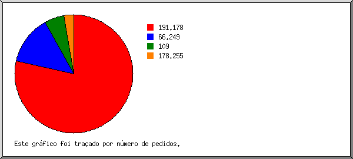
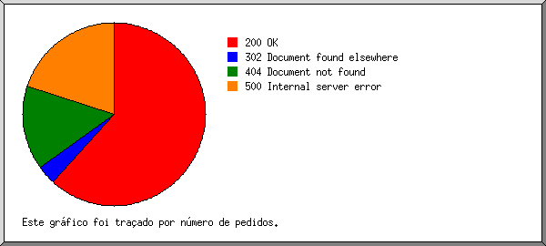
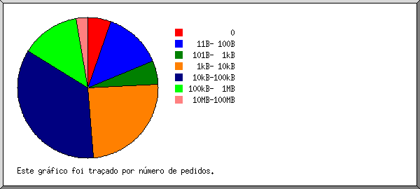
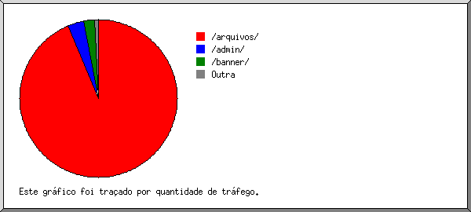

Estatísticas do Servidor Web de inovarlocacoes.com
Estatísticas do Servidor Web de inovarlocacoes.com
Começo do programa em Seg-21-Nov-2016 10:16.
Análise de pedidos desde Sab-12-Nov-2016 02:24 até Dom-20-Nov-2016 19:37 (8,72 dias).
Estatísticas do Servidor Web de inovarlocacoes.comComeço do programa em Seg-21-Nov-2016 10:16.
Análise de pedidos desde Sab-12-Nov-2016 02:24 até Dom-20-Nov-2016 19:37 (8,72 dias).
(Ir a: Início | Sumário Geral | Relatório Mensal | Resumo Diário | Resumo Horário | Relatório de Domínios | Relatório de organizações | Relatório de referência redireccionada | Relatório de referência falhada | Relatório do sítio de referência | Relatório de Leitores | Resumo de Leitores | Relatório de Sistemas Operativos | Relatório de Códigos de Estado | Relatório de Tamanho de Ficheiro | Relatório de Tipos de Ficheiro | Relatório de Directorias | Relatório de Pedidos)
Os valores entre parêntesis referem-se aos 7 dias até 21-Nov-2016 10:16.
Pedidos atendidos: 37 (35)
Número médio de pedidos atendidos por dia: 4 (4)
Pedidos de páginas atendidos: 2 (0)
Pedidos não atendidos: 21 (3)
Pedidos redirigidos: 2 (0)
Ficheiros diferentes solicitados: 32 (39)
Servidores diferentes atendidos: 8 (13)
Tráfego total: 16,20 megabytes (16,11 megabytes)
Tráfego médio transferido por dia: 1,86 megabytes (2,30 megabytes)
(Ir a: Início | Sumário Geral | Relatório Mensal | Resumo Diário | Resumo Horário | Relatório de Domínios | Relatório de organizações | Relatório de referência redireccionada | Relatório de referência falhada | Relatório do sítio de referência | Relatório de Leitores | Resumo de Leitores | Relatório de Sistemas Operativos | Relatório de Códigos de Estado | Relatório de Tamanho de Ficheiro | Relatório de Tipos de Ficheiro | Relatório de Directorias | Relatório de Pedidos)
Cada unidade ( ) representa 1 pedido de uma página.
) representa 1 pedido de uma página.
| mês | N.ped | Pgs. | |
|---|---|---|---|
| Nov 2016 | 37 | 2 |  |
Mês mais movimentado: Nov 2016 (2 pedidos de páginas).
(Ir a: Início | Sumário Geral | Relatório Mensal | Resumo Diário | Resumo Horário | Relatório de Domínios | Relatório de organizações | Relatório de referência redireccionada | Relatório de referência falhada | Relatório do sítio de referência | Relatório de Leitores | Resumo de Leitores | Relatório de Sistemas Operativos | Relatório de Códigos de Estado | Relatório de Tamanho de Ficheiro | Relatório de Tipos de Ficheiro | Relatório de Directorias | Relatório de Pedidos)
Cada unidade () representa 1 pedido de uma página.
| dia | N.ped | Pgs. | |
|---|---|---|---|
| Dom | 1 | 0 | |
| Seg | 0 | 0 | |
| Ter | 1 | 0 | |
| Qua | 30 | 0 | |
| Qui | 1 | 0 | |
| Sex | 1 | 0 | |
| Sab | 3 | 2 | |
(Ir a: Início | Sumário Geral | Relatório Mensal | Resumo Diário | Resumo Horário | Relatório de Domínios | Relatório de organizações | Relatório de referência redireccionada | Relatório de referência falhada | Relatório do sítio de referência | Relatório de Leitores | Resumo de Leitores | Relatório de Sistemas Operativos | Relatório de Códigos de Estado | Relatório de Tamanho de Ficheiro | Relatório de Tipos de Ficheiro | Relatório de Directorias | Relatório de Pedidos)
Cada unidade () representa 1 pedido de uma página.
| h | N.ped | Pgs. | |
|---|---|---|---|
| 00 | 0 | 0 | |
| 01 | 0 | 0 | |
| 02 | 2 | 2 | |
| 03 | 0 | 0 | |
| 04 | 0 | 0 | |
| 05 | 0 | 0 | |
| 06 | 0 | 0 | |
| 07 | 0 | 0 | |
| 08 | 0 | 0 | |
| 09 | 0 | 0 | |
| 10 | 0 | 0 | |
| 11 | 29 | 0 | |
| 12 | 0 | 0 | |
| 13 | 0 | 0 | |
| 14 | 0 | 0 | |
| 15 | 1 | 0 | |
| 16 | 2 | 0 | |
| 17 | 0 | 0 | |
| 18 | 0 | 0 | |
| 19 | 2 | 0 | |
| 20 | 0 | 0 | |
| 21 | 1 | 0 | |
| 22 | 0 | 0 | |
| 23 | 0 | 0 |
(Ir a: Início | Sumário Geral | Relatório Mensal | Resumo Diário | Resumo Horário | Relatório de Domínios | Relatório de organizações | Relatório de referência redireccionada | Relatório de referência falhada | Relatório do sítio de referência | Relatório de Leitores | Resumo de Leitores | Relatório de Sistemas Operativos | Relatório de Códigos de Estado | Relatório de Tamanho de Ficheiro | Relatório de Tipos de Ficheiro | Relatório de Directorias | Relatório de Pedidos)
Mostrando os domínios, ordenados por quantidade de tráfego.
| N.ped | %bytes | domínio |
|---|---|---|
| 37 | 100% | [endereço numérico não traduzido] |
(Ir a: Início | Sumário Geral | Relatório Mensal | Resumo Diário | Resumo Horário | Relatório de Domínios | Relatório de organizações | Relatório de referência redireccionada | Relatório de referência falhada | Relatório do sítio de referência | Relatório de Leitores | Resumo de Leitores | Relatório de Sistemas Operativos | Relatório de Códigos de Estado | Relatório de Tamanho de Ficheiro | Relatório de Tipos de Ficheiro | Relatório de Directorias | Relatório de Pedidos)

Mostrando as organizações, ordenadas por número de pedidos.
| N.ped | %bytes | organização |
|---|---|---|
| 29 | 99,44% | 191.178 |
| 5 | 66.249 | |
| 2 | 0,56% | 109 |
| 1 | 178.255 |
(Ir a: Início | Sumário Geral | Relatório Mensal | Resumo Diário | Resumo Horário | Relatório de Domínios | Relatório de organizações | Relatório de referência redireccionada | Relatório de referência falhada | Relatório do sítio de referência | Relatório de Leitores | Resumo de Leitores | Relatório de Sistemas Operativos | Relatório de Códigos de Estado | Relatório de Tamanho de Ficheiro | Relatório de Tipos de Ficheiro | Relatório de Directorias | Relatório de Pedidos)
Mostrando os URLs de referência, ordenados por número de pedidos redireccionados.
| N.ped | URL |
|---|---|
| 2 | https://www.inovarlocacoes.com/portaldofranqueado |
(Ir a: Início | Sumário Geral | Relatório Mensal | Resumo Diário | Resumo Horário | Relatório de Domínios | Relatório de organizações | Relatório de referência redireccionada | Relatório de referência falhada | Relatório do sítio de referência | Relatório de Leitores | Resumo de Leitores | Relatório de Sistemas Operativos | Relatório de Códigos de Estado | Relatório de Tamanho de Ficheiro | Relatório de Tipos de Ficheiro | Relatório de Directorias | Relatório de Pedidos)
Mostrando os URLs de referência, ordenados por número de pedidos falhados.
| N.ped | URL |
|---|---|
| 8 | https://www.inovarlocacoes.com/portaldofranqueado |
(Ir a: Início | Sumário Geral | Relatório Mensal | Resumo Diário | Resumo Horário | Relatório de Domínios | Relatório de organizações | Relatório de referência redireccionada | Relatório de referência falhada | Relatório do sítio de referência | Relatório de Leitores | Resumo de Leitores | Relatório de Sistemas Operativos | Relatório de Códigos de Estado | Relatório de Tamanho de Ficheiro | Relatório de Tipos de Ficheiro | Relatório de Directorias | Relatório de Pedidos)
Mostrando os sítios de referência, ordenados por número de pedidos.
| N.ped | sítio |
|---|---|
| 28 | https://www.inovarlocacoes.com/ |
(Ir a: Início | Sumário Geral | Relatório Mensal | Resumo Diário | Resumo Horário | Relatório de Domínios | Relatório de organizações | Relatório de referência redireccionada | Relatório de referência falhada | Relatório do sítio de referência | Relatório de Leitores | Resumo de Leitores | Relatório de Sistemas Operativos | Relatório de Códigos de Estado | Relatório de Tamanho de Ficheiro | Relatório de Tipos de Ficheiro | Relatório de Directorias | Relatório de Pedidos)
Mostrando os leitores com pelo menos 1 pedido de uma página, ordenados por número de pedidos de páginas.
| N.ped | Pgs. | Leitor |
|---|---|---|
| 2 | 2 | redback/v0-570-g26f8c96 |
| 35 | 0 | [não listados: 3 Leitores] |
(Ir a: Início | Sumário Geral | Relatório Mensal | Resumo Diário | Resumo Horário | Relatório de Domínios | Relatório de organizações | Relatório de referência redireccionada | Relatório de referência falhada | Relatório do sítio de referência | Relatório de Leitores | Resumo de Leitores | Relatório de Sistemas Operativos | Relatório de Códigos de Estado | Relatório de Tamanho de Ficheiro | Relatório de Tipos de Ficheiro | Relatório de Directorias | Relatório de Pedidos)
Mostrando os leitores com pelo menos 1 pedido de uma página, ordenados por número de pedidos de páginas.
| no. | N.ped | Pgs. | Leitor |
|---|---|---|---|
| 1 | 2 | 2 | redback |
| 2 | 2 | redback/v0-570-g26f8c96 | |
| 35 | 0 | [não listados: 3 Leitores] |
(Ir a: Início | Sumário Geral | Relatório Mensal | Resumo Diário | Resumo Horário | Relatório de Domínios | Relatório de organizações | Relatório de referência redireccionada | Relatório de referência falhada | Relatório do sítio de referência | Relatório de Leitores | Resumo de Leitores | Relatório de Sistemas Operativos | Relatório de Códigos de Estado | Relatório de Tamanho de Ficheiro | Relatório de Tipos de Ficheiro | Relatório de Directorias | Relatório de Pedidos)
Mostrando os Sistemas Operativos, ordenados por número de pedidos de páginas.
| no. | N.ped | Pgs. | Sistema Operativo |
|---|---|---|---|
| 1 | 8 | 2 | Sistema Operativo desconhecido |
| 2 | 29 | 0 | Windows |
| 29 | 0 | Windows desconhecido |
(Ir a: Início | Sumário Geral | Relatório Mensal | Resumo Diário | Resumo Horário | Relatório de Domínios | Relatório de organizações | Relatório de referência redireccionada | Relatório de referência falhada | Relatório do sítio de referência | Relatório de Leitores | Resumo de Leitores | Relatório de Sistemas Operativos | Relatório de Códigos de Estado | Relatório de Tamanho de Ficheiro | Relatório de Tipos de Ficheiro | Relatório de Directorias | Relatório de Pedidos)

Mostrando os códigos de estado, por ordem numérica.
| N.ped | cod. estado |
|---|---|
| 37 | 200 OK |
| 2 | 302 Document found elsewhere |
| 9 | 404 Document not found |
| 12 | 500 Internal server error |
(Ir a: Início | Sumário Geral | Relatório Mensal | Resumo Diário | Resumo Horário | Relatório de Domínios | Relatório de organizações | Relatório de referência redireccionada | Relatório de referência falhada | Relatório do sítio de referência | Relatório de Leitores | Resumo de Leitores | Relatório de Sistemas Operativos | Relatório de Códigos de Estado | Relatório de Tamanho de Ficheiro | Relatório de Tipos de Ficheiro | Relatório de Directorias | Relatório de Pedidos)

| tamanho | N.ped | %bytes |
|---|---|---|
| 0 | 2 | |
| 1B- 10B | 0 | |
| 11B- 100B | 5 | |
| 101B- 1kB | 2 | 0,01% |
| 1kB- 10kB | 9 | 0,26% |
| 10kB-100kB | 13 | 3,15% |
| 100kB- 1MB | 5 | 4,44% |
| 1MB- 10MB | 0 | |
| 10MB-100MB | 1 | 92,14% |
(Ir a: Início | Sumário Geral | Relatório Mensal | Resumo Diário | Resumo Horário | Relatório de Domínios | Relatório de organizações | Relatório de referência redireccionada | Relatório de referência falhada | Relatório do sítio de referência | Relatório de Leitores | Resumo de Leitores | Relatório de Sistemas Operativos | Relatório de Códigos de Estado | Relatório de Tamanho de Ficheiro | Relatório de Tipos de Ficheiro | Relatório de Directorias | Relatório de Pedidos)

Mostrando as extensões com pelo menos 0,1% do tráfego, ordenadas por quantidade de tráfego.
| N.ped | %bytes | extensão |
|---|---|---|
| 1 | 92,14% | .rar |
| 3 | 2,22% | .jpg [JPEG graphics] |
| 9 | 1,79% | .js [JavaScript code] |
| 1 | 1,57% | .pdf [Adobe Portable Document Format] |
| 3 | 0,95% | .css [Cascading Style Sheets] |
| 2 | 0,56% | [directorias] |
| 3 | 0,36% | [extensão ausente] |
| 7 | 0,26% | .png [PNG graphics] |
| 1 | 0,14% | .woff |
| 7 | [não listadas: 2 extensões] |
(Ir a: Início | Sumário Geral | Relatório Mensal | Resumo Diário | Resumo Horário | Relatório de Domínios | Relatório de organizações | Relatório de referência redireccionada | Relatório de referência falhada | Relatório do sítio de referência | Relatório de Leitores | Resumo de Leitores | Relatório de Sistemas Operativos | Relatório de Códigos de Estado | Relatório de Tamanho de Ficheiro | Relatório de Tipos de Ficheiro | Relatório de Directorias | Relatório de Pedidos)

Mostrando as directorias com pelo menos 0,01% do tráfego, ordenadas por quantidade de tráfego.
| N.ped | %bytes | directoria |
|---|---|---|
| 2 | 93,72% | /arquivos/ |
| 16 | 3,32% | /admin/ |
| 3 | 2,22% | /banner/ |
| 10 | 0,61% | [directoria da raiz] |
| 6 | 0,14% | /img/ |
(Ir a: Início | Sumário Geral | Relatório Mensal | Resumo Diário | Resumo Horário | Relatório de Domínios | Relatório de organizações | Relatório de referência redireccionada | Relatório de referência falhada | Relatório do sítio de referência | Relatório de Leitores | Resumo de Leitores | Relatório de Sistemas Operativos | Relatório de Códigos de Estado | Relatório de Tamanho de Ficheiro | Relatório de Tipos de Ficheiro | Relatório de Directorias | Relatório de Pedidos)
Mostrando os ficheiros com pelo menos 20 pedidos, ordenados por número de pedidos.
| N.ped | %bytes | hora ant. | ficheiro |
|---|---|---|---|
| 37 | 100% | 20/Nov/16 19:17 | [não listados: 31 ficheiros] |